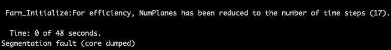

4.19.3. FAST.Farm 실행
FAST.Farm은 OpenFAST의 모듈이므로 FAST.Farm을 다운로드하고 컴파일하고 실행하는 과정은 OpenFAST와 동일합니다. 이러한 지침은 OpenFAST 설치 선적 서류 비치.
참고
FAST.Farm을 활성화하여 컴파일한 OpenFAST의 속도를 향상시키기 위해 사용자는 다음을 사용하여 단정밀도로 컴파일할 수 있습니다. OpenMP. 이렇게 하려면 다음을 추가하세요. -DDOUBLE_PRECISION:BOOL=OFF -DOPENMP=ON CMake 옵션.
참고
체크포인트 재시작 기능은 아직 FAST.Farm 내에서 구현되지 않았습니다.
4.19.3.1. 문제 해결
4.19.3.1.1. 시작 시 분할 오류
매우 큰 FAST.Farm 시뮬레이션에서는 OpenMP에 대해 스택 메모리가 부족하면 분할 오류가 발생할 수 있습니다. 이는 수십 킬로미터 이상 간격으로 배치된 50개 이상의 터빈을 사용한 시뮬레이션에서 나타날 수 있습니다. 이 경우 화면에 T=0 시간 단계가 표시된 직후에 오류가 발생할 가능성이 높습니다.

Linux 기반 시스템에서 OpenMP 프로세스에 할당된 스택을 늘리려면 환경 변수 OMP_STACKSIZE 기본 4 MB(Intel 컴파일)에서 32 MB(또는 그 이상)로 늘릴 수 있습니다.
export OMP_STACKSIZE="32 M"
이것이 분할 오류를 해결한다면 근본 원인은 스택 예약이 충분하지 않은 OpenMP와의 병렬화 때문입니다. 그래도 문제가 해결되지 않으면 보고해야 할 다른 문제가 있을 수 있습니다.
OpenMP를 사용한 분할 오류에 대한 자세한 내용은 다음을 참조하세요. 스택오버플로우 댓글 및 인텔 OpenMP 문서.